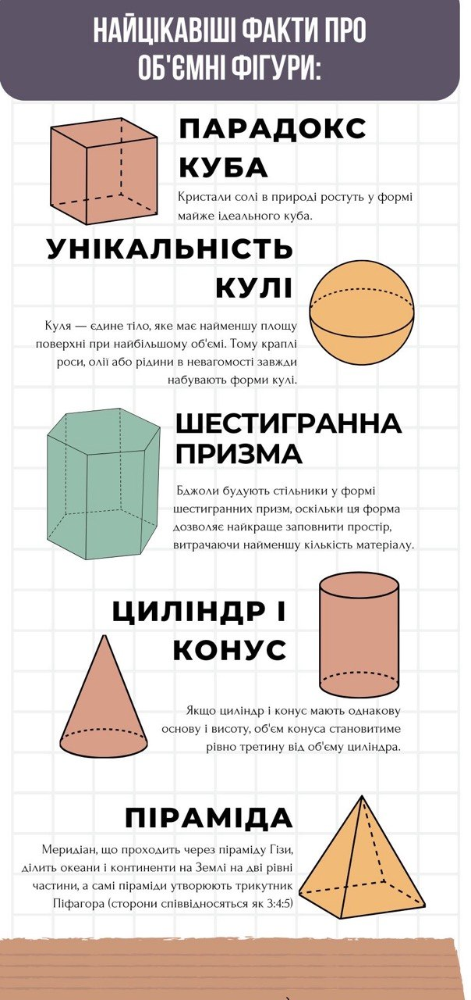

Створення інфографіки
9 березня 2026
Тема: Інформаційна графіка.
Завдання: Розробити навчальну інфографіку до однієї з тем чи розділів профільного /улюбленого навчального предмета або візуалізувати статтю за тематикою профільних предметів.

Під час виконання проєкту я навчилася візуалізувати інформацію та створювати інфографіку. Робота допомогла розвинути навички пошуку, аналізу й графічного оформлення інформації.